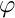
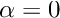
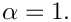
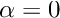
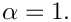
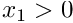
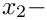
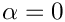

The aim of this tutorial is to demonstrate the adaptive solution of the time-harmonic equations of linear elasticity in cartesian coordinates on unstructured meshes.
The sketch below shows the problem setup: A 2D elastic annulus which is reinforced with two T-ribs is subjected to a time-periodic pressure load of magnitude
(where  is the polar angle) along its outer edge. The parameter  controls the "sharpness" of the pressure load. For  we obtain a uniform, axisymmetric load; the sketch below shows the pressure distribution (red vectors indicating the traction) for 
controls the "sharpness" of the pressure load. For  we obtain a uniform, axisymmetric load; the sketch below shows the pressure distribution (red vectors indicating the traction) for 
The structure is symmetric and we only discretise the right half ( ) of the domain and apply symmetry conditions (zero horizontal displacement) on the  axis.
The figure below shows an animation of the structure's time-harmonic oscillation. The blue shaded region shows the shape of the oscillating structure while the pink region shows its initial configuration. The left half of the plot is used to show the (mirror image of the) adaptive unstructured mesh on which the solution was computed:
This looks very pretty and shows that we can compute in non-trivial geometries but should you believe the results? Here's an attempt to convince you: If we make the rib much softer than the annulus, the rib will not offer much structural resistance and the annular region will deform as if the rib was not present. If we then set  we apply an axisymmetric forcing onto the structure and would expect the resulting displacement field (at least in the annular region) to be axisymmetric. For this case it is easy to find an analytical solution to the problem. The next two figures show a comparison between the analytical (green spheres) and computed solutions (shaded) for the real part of the horizontal and vertical displacements, respectively.
#include "generic.h"
#include "time_harmonic_linear_elasticity.h"
#include "meshes/triangle_mesh.h"
using namespace std;
using namespace oomph;
{
public:
MyStraightLine(
const Vector<double>& r_start,
const Vector<double>& r_end)
{ }
{
BrokenCopy::broken_copy("MyStraightLine");
}
{
BrokenCopy::broken_assign("MyStraightLine");
}
void position(
const Vector<double>& zeta, Vector<double>& r)
const
{
}
private:
};
{
Vector<TimeHarmonicIsotropicElasticityTensor*>
E_pt;
const Vector<double> &n,
Vector<std::complex<double> >&traction)
{
double phi=atan2(x[1],x[0]);
double magnitude=exp(-
Alpha*pow(phi-0.25*MathematicalConstants::Pi,2));
unsigned dim = traction.size();
for(unsigned i=0;i<dim;i++)
{
traction[i] = complex<double>(-magnitude*
P*n[i],magnitude*
P*n[i]);
}
}
}
template<class ELASTICITY_ELEMENT>
{
public:
private:
#ifdef ADAPTIVE
#else
#endif
};
template<class ELASTICITY_ELEMENT>
{
Vector<double> r_start(2);
Vector<double> r_end(2);
double r_outer = 1.0;
double rib_thick=0.05;
double rib_depth=0.2;
double t_width=0.2;
double t_thick=0.05;
double half_phi_rib=asin(0.5*rib_thick/r_inner);
TriangleMeshClosedCurve* closed_curve_pt=0;
Vector<TriangleMeshCurveSection*> curvilinear_boundary_pt;
Ellipse* outer_boundary_circle_pt = new Ellipse(r_outer,r_outer);
double zeta_start=-0.5*MathematicalConstants::Pi;
double zeta_end=0.5*MathematicalConstants::Pi;
unsigned nsegment=50;
unsigned boundary_id=curvilinear_boundary_pt.size();
curvilinear_boundary_pt.push_back(
new TriangleMeshCurviLine(
outer_boundary_circle_pt,zeta_start,zeta_end,nsegment,boundary_id));
Outer_boundary_id=boundary_id;
r_start[0]=0.0;
r_start[1]=r_outer;
r_end[0]=0.0;
r_end[1]=r_inner;
zeta_start=0.0;
zeta_end=1.0;
nsegment=1;
boundary_id=curvilinear_boundary_pt.size();
curvilinear_boundary_pt.push_back(
new TriangleMeshCurviLine(
upper_sym_pt,zeta_start,zeta_end,nsegment,boundary_id));
Upper_symmetry_boundary_id=boundary_id;
Ellipse* upper_inner_boundary_pt =
new Ellipse(r_inner,r_inner);
zeta_start=0.5*MathematicalConstants::Pi;
zeta_end=half_phi_rib;
nsegment=20;
boundary_id=curvilinear_boundary_pt.size();
curvilinear_boundary_pt.push_back(
new TriangleMeshCurviLine(
upper_inner_boundary_pt,
zeta_start,zeta_end,nsegment,boundary_id));
r_start[0]=r_inner*cos(half_phi_rib);
r_start[1]=r_inner*sin(half_phi_rib);
r_end[0]=r_start[0]-rib_depth;
r_end[1]=r_start[1];
zeta_start=0.0;
zeta_end=1.0;
nsegment=1;
boundary_id=curvilinear_boundary_pt.size();
TriangleMeshCurviLine* upper_inward_rib_curviline_pt=
new TriangleMeshCurviLine(
upper_inward_rib_pt,zeta_start,zeta_end,nsegment,boundary_id);
curvilinear_boundary_pt.push_back(upper_inward_rib_curviline_pt);
r_start[0]=r_end[0];
r_start[1]=r_end[1];
r_end[0]=r_start[0];
r_end[1]=r_start[1]+0.5*(t_width-rib_thick);
zeta_start=0.0;
zeta_end=1.0;
nsegment=1;
boundary_id=curvilinear_boundary_pt.size();
curvilinear_boundary_pt.push_back(
new TriangleMeshCurviLine(
vertical_upper_t_rib_pt,zeta_start,zeta_end,nsegment,boundary_id));
r_start[0]=r_end[0];
r_start[1]=r_end[1];
r_end[0]=r_start[0]-t_thick;
r_end[1]=r_start[1];
zeta_start=0.0;
zeta_end=1.0;
nsegment=1;
boundary_id=curvilinear_boundary_pt.size();
curvilinear_boundary_pt.push_back(
new TriangleMeshCurviLine(
horizontal_upper_t_rib_pt,zeta_start,zeta_end,nsegment,boundary_id));
r_start[0]=r_end[0];
r_start[1]=r_end[1];
r_end[0]=r_start[0];
r_end[1]=-r_start[1];
zeta_start=0.0;
zeta_end=1.0;
nsegment=1;
boundary_id=curvilinear_boundary_pt.size();
curvilinear_boundary_pt.push_back(
new TriangleMeshCurviLine(
inner_vertical_rib_pt,zeta_start,zeta_end,nsegment,boundary_id));
r_start[0]=r_end[0];
r_start[1]=r_end[1];
r_end[0]=r_start[0]+t_thick;
r_end[1]=r_start[1];
zeta_start=0.0;
zeta_end=1.0;
nsegment=1;
boundary_id=curvilinear_boundary_pt.size();
curvilinear_boundary_pt.push_back(
new TriangleMeshCurviLine(
horizontal_lower_t_rib_pt,zeta_start,zeta_end,nsegment,boundary_id));
r_start[0]=r_end[0];
r_start[1]=r_end[1];
r_end[0]=r_start[0];
r_end[1]=r_start[1]+0.5*(t_width-rib_thick);
zeta_start=0.0;
zeta_end=1.0;
nsegment=1;
boundary_id=curvilinear_boundary_pt.size();
curvilinear_boundary_pt.push_back(
new TriangleMeshCurviLine(
vertical_lower_t_rib_pt,zeta_start,zeta_end,nsegment,boundary_id));
r_end[0]=r_inner*cos(half_phi_rib);
r_end[1]=-r_inner*sin(half_phi_rib);
r_start[0]=r_end[0]-rib_depth;
r_start[1]=r_end[1];
zeta_start=0.0;
zeta_end=1.0;
nsegment=1;
boundary_id=curvilinear_boundary_pt.size();
TriangleMeshCurviLine* lower_inward_rib_curviline_pt=
new TriangleMeshCurviLine(
lower_inward_rib_pt,zeta_start,zeta_end,nsegment,boundary_id);
curvilinear_boundary_pt.push_back(lower_inward_rib_curviline_pt);
Ellipse* lower_inner_boundary_circle_pt = new Ellipse(r_inner,r_inner);
zeta_start=-half_phi_rib;
zeta_end=-0.5*MathematicalConstants::Pi;
nsegment=20;
boundary_id=curvilinear_boundary_pt.size();
curvilinear_boundary_pt.push_back(
new TriangleMeshCurviLine(
lower_inner_boundary_circle_pt,zeta_start,zeta_end,nsegment,boundary_id));
r_start[0]=0.0;
r_start[1]=-r_inner;
r_end[0]=0.0;
r_end[1]=-r_outer;
zeta_start=0.0;
zeta_end=1.0;
nsegment=1;
boundary_id=curvilinear_boundary_pt.size();
curvilinear_boundary_pt.push_back(
new TriangleMeshCurviLine(
lower_sym_pt,zeta_start,zeta_end,nsegment,boundary_id));
Lower_symmetry_boundary_id=boundary_id;
closed_curve_pt=
new TriangleMeshClosedCurve(curvilinear_boundary_pt);
Vector<TriangleMeshCurveSection*> internal_polyline_pt(1);
r_start[0]=r_inner*cos(half_phi_rib);
r_start[1]=r_inner*sin(half_phi_rib);
r_end[0]=r_inner*cos(half_phi_rib);
r_end[1]=-r_inner*sin(half_phi_rib);
Vector<Vector<double> > boundary_vertices(2);
boundary_vertices[0]=r_start;
boundary_vertices[1]=r_end;
boundary_id=100;
TriangleMeshPolyLine* rib_divider_pt=
new TriangleMeshPolyLine(boundary_vertices,boundary_id);
internal_polyline_pt[0]=rib_divider_pt;
double s_connect=0.0;
internal_polyline_pt[0]->connect_initial_vertex_to_curviline(
upper_inward_rib_curviline_pt,s_connect);
s_connect=1.0;
internal_polyline_pt[0]->connect_final_vertex_to_curviline(
lower_inward_rib_curviline_pt,s_connect);
Vector<TriangleMeshOpenCurve*> inner_boundary_pt;
inner_boundary_pt.push_back(new TriangleMeshOpenCurve(internal_polyline_pt));
Vector<double> rib_center(2);
rib_center[0]=r_inner-rib_depth;
rib_center[1]=0.0;
TriangleMeshParameters triangle_mesh_parameters(closed_curve_pt);
triangle_mesh_parameters.element_area()=0.2;
triangle_mesh_parameters.internal_open_curves_pt()=inner_boundary_pt;
triangle_mesh_parameters.add_region_coordinates(1,rib_center);
#ifdef ADAPTIVE
Solid_mesh_pt=new
RefineableTriangleMesh<ELASTICITY_ELEMENT>(triangle_mesh_parameters);
Solid_mesh_pt->spatial_error_estimator_pt()=new Z2ErrorEstimator;
#else
Solid_mesh_pt=new
TriangleMesh<ELASTICITY_ELEMENT>(triangle_mesh_parameters);
#endif
Solid_mesh_pt->output("solid_mesh.dat");
Solid_mesh_pt->output_boundaries("solid_mesh_boundary.dat");
Traction_mesh_pt=new Mesh;
create_traction_elements();
add_sub_mesh(Solid_mesh_pt);
add_sub_mesh(Traction_mesh_pt);
build_global_mesh();
complete_problem_setup();
cout << assign_eqn_numbers() << std::endl;
}
template<class ELASTICITY_ELEMENT>
{
#ifdef ADAPTIVE
if (!CommandLineArgs::command_line_flag_has_been_set("--validation"))
{
Solid_mesh_pt->min_element_size()=1.0e-5;
}
#endif
unsigned nreg=Solid_mesh_pt->nregion();
for (unsigned r=0;r<nreg;r++)
{
unsigned nel=Solid_mesh_pt->nregion_element(r);
for (unsigned e=0;e<nel;e++)
{
ELASTICITY_ELEMENT *el_pt =
dynamic_cast<ELASTICITY_ELEMENT*>(Solid_mesh_pt->region_element_pt(r,e));
}
}
{
unsigned n_node = Solid_mesh_pt->nboundary_node(Upper_symmetry_boundary_id);
for(unsigned i=0;i<n_node;i++)
{
Node* nod_pt=Solid_mesh_pt->boundary_node_pt(Upper_symmetry_boundary_id,i);
nod_pt->pin(0);
nod_pt->set_value(0,0.0);
nod_pt->pin(2);
nod_pt->set_value(2,0.0);
}
}
{
unsigned n_node = Solid_mesh_pt->nboundary_node(Lower_symmetry_boundary_id);
for(unsigned i=0;i<n_node;i++)
{
Node* nod_pt=Solid_mesh_pt->boundary_node_pt(Lower_symmetry_boundary_id,i);
nod_pt->pin(0);
nod_pt->set_value(0,0.0);
nod_pt->pin(2);
nod_pt->set_value(2,0.0);
}
}
}
template<class ELASTICITY_ELEMENT>
{
delete_traction_elements();
rebuild_global_mesh();
}
template<class ELASTICITY_ELEMENT>
{
create_traction_elements();
rebuild_global_mesh();
complete_problem_setup();
}
template<class ELASTICITY_ELEMENT>
{
unsigned b=Outer_boundary_id;
{
unsigned n_element = Solid_mesh_pt->nboundary_element(b);
for(unsigned e=0;e<n_element;e++)
{
ELASTICITY_ELEMENT* bulk_elem_pt = dynamic_cast<ELASTICITY_ELEMENT*>(
Solid_mesh_pt->boundary_element_pt(b,e));
int face_index = Solid_mesh_pt->face_index_at_boundary(b,e);
TimeHarmonicLinearElasticityTractionElement<ELASTICITY_ELEMENT>* el_pt=
new TimeHarmonicLinearElasticityTractionElement<ELASTICITY_ELEMENT>
(bulk_elem_pt,face_index);
Traction_mesh_pt->add_element_pt(el_pt);
el_pt->set_boundary_number_in_bulk_mesh(b);
}
}
}
template<class ELASTICITY_ELEMENT>
{
unsigned n_element = Traction_mesh_pt->nelement();
for(unsigned e=0;e<n_element;e++)
{
delete Traction_mesh_pt->element_pt(e);
}
Traction_mesh_pt->flush_element_and_node_storage();
}
template<class ELASTICITY_ELEMENT>
{
ofstream some_file;
char filename[100];
unsigned n_plot=5;
snprintf(filename, sizeof(filename), "%s/elast_soln%i.dat",Doc_info.directory().c_str(),
Doc_info.number());
some_file.open(filename);
Solid_mesh_pt->output(some_file,n_plot);
some_file.close();
snprintf(filename, sizeof(filename), "%s/traction_soln%i.dat",Doc_info.directory().c_str(),
Doc_info.number());
some_file.open(filename);
Traction_mesh_pt->output(some_file,n_plot);
some_file.close();
unsigned nreg=Solid_mesh_pt->nregion();
for (unsigned r=0;r<nreg;r++)
{
snprintf(filename, sizeof(filename), "%s/region%i_%i.dat",Doc_info.directory().c_str(),
r,Doc_info.number());
some_file.open(filename);
unsigned nel=Solid_mesh_pt->nregion_element(r);
for (unsigned e=0;e<nel;e++)
{
FiniteElement* el_pt=Solid_mesh_pt->region_element_pt(r,e);
el_pt->output(some_file,n_plot);
}
some_file.close();
}
snprintf(filename, sizeof(filename), "%s/norm%i.dat",Doc_info.directory().c_str(),
Doc_info.number());
some_file.open(filename);
double norm=0.0;
unsigned nel=Solid_mesh_pt->nelement();
for (unsigned e=0;e<nel;e++)
{
double el_norm=0.0;
Solid_mesh_pt->compute_norm(el_norm);
norm+=el_norm;
}
some_file << norm << std::endl;
Doc_info.number()++;
}
int main(
int argc,
char **argv)
{
CommandLineArgs::setup(argc,argv);
#ifdef ADAPTIVE
unsigned max_adapt=3;
CommandLineArgs::specify_command_line_flag("--max_adapt",&max_adapt);
#endif
CommandLineArgs::specify_command_line_flag("--alpha",
CommandLineArgs::specify_command_line_flag("--validation");
CommandLineArgs::parse_and_assign();
CommandLineArgs::doc_specified_flags();
#ifdef ADAPTIVE
<TTimeHarmonicLinearElasticityElement<2,3> > >
problem;
#else
#endif
unsigned nstep=2;
for(unsigned i=0;i<nstep;i++)
{
#ifdef ADAPTIVE
problem.newton_solve(max_adapt);
#else
problem.newton_solve();
#endif
}
}
Straight 1D line in 2D space.
Vector< double > R_start
Start point of line.
void operator=(const MyStraightLine &)
Broken assignment operator.
~MyStraightLine()
Destructor: Empty.
void position(const Vector< double > &zeta, Vector< double > &r) const
Position Vector at Lagrangian coordinate zeta.
Vector< double > R_end
End point of line.
DocInfo Doc_info
DocInfo object for output.
void doc_solution()
Doc the solution.
void actions_after_newton_solve()
Update function (empty)
void actions_before_adapt()
Actions before adapt: Wipe the mesh of traction elements.
void complete_problem_setup()
Helper function to complete problem setup.
void actions_after_adapt()
Actions after adapt: Rebuild the mesh of traction elements.
unsigned Outer_boundary_id
Boundary ID of outer boundary.
RefineableTriangleMesh< ELASTICITY_ELEMENT > * Solid_mesh_pt
Pointer to refineable solid mesh.
unsigned Lower_symmetry_boundary_id
Boundary ID of lower symmetry boundary.
void actions_before_newton_solve()
Update function (empty)
void delete_traction_elements()
Delete traction elements.
Mesh * Traction_mesh_pt
Pointer to mesh of traction elements.
void create_traction_elements()
Create traction elements.
RingWithTRibProblem()
Constructor:
unsigned Upper_symmetry_boundary_id
Boundary ID of upper symmetry boundary.
double H_annulus
Thickness of annulus.
void pressure_load(const Vector< double > &x, const Vector< double > &n, Vector< std::complex< double > > &traction)
Constant pressure load (real and imag part)
double Nu
Poisson's ratio.
string Directory
Output directory.
double P
Uniform pressure.
Vector< double > Omega_sq_region(2, Omega_sq)
Square of non-dim frequency for the two regions.
Vector< TimeHarmonicIsotropicElasticityTensor * > E_pt
The elasticity tensors for the two regions.
double Omega_sq
Square of non-dim frequency.
double Alpha
Peakiness parameter for pressure load.
int main(int argc, char **argv)
Driver for annular disk loaded by pressure.